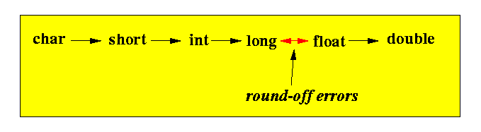

- Safe conversion:
- A safe conversion from
one data type to another data type is a
conversion that
does not
cause an
overflow
(I.e., you will get a representation for the same value)
- A safe conversion from
one data type to another data type is a
conversion that
does not
cause an
overflow
- The following
conversions are
safe in C:

Important Note:
- In C, safety has nothing to do with permission !!!
This will be explained in the automatic conversion rule next....
- Automatic conversion rules
of C:
- A binary operation using
values of 2 different types:
- C will automatically
perform a safe conversion
for
the value of the
less capable data type
to a value of the
higher capable data type
Example:
int a; float b; a + b 1. first convert A to float 2. then perform A + B as float + float (Just like Java)
- C will automatically
perform a safe conversion
for
the value of the
less capable data type
to a value of the
higher capable data type
- An assignment operation using
values of 2 different types:
- C will automatically
perform a conversion
for
the value of the
LHS data type
to a value of the
RHS data type
Even if the conversion will cause precision loss (i.e., unsafe) !!!
Example:
int a; float b a = b; 1. first convert b to int !!! 2. then store the value in variable a (DIFFERENT from Java !!!)Note: this is forbidden in Java !!! (Need a casting operator)
- C will automatically
perform a conversion
for
the value of the
LHS data type
to a value of the
RHS data type
- A binary operation using
values of 2 different types:
- Warning to
Java programmers:
-
In C, you can perform
unsafe assignment operations
that Java will not allow
without using a casting operation
Rationale:
- C is designed for
system programming; and
system programmers are
mature programmers
who should know the danger
of all features of the programming language.
- Furthermore, preventive features
in programming languages can
prevent programmers from
performing certain tasks.
- A systems programming language is intended to give the programmer to complete control of the computer (no restrictions)
Compiler checks for type conflicts often limit the programmers' ability to perform some tasks.
Hence, these checks are omitted.
- C is designed for
system programming; and
system programmers are
mature programmers
who should know the danger
of all features of the programming language.
- Conclusion:
- C is
less
strongly typed than Java
(In other words: grow up !!!)
- C is
less
strongly typed than Java
-
In C, you can perform
unsafe assignment operations
that Java will not allow
without using a casting operation
- Some help for
Java programmers:
- You can make the
C compiler give you
warnings when
the compiler detects
a "Java-illegal" operation:
Compile your C program using the -Wconversion option gcc -Wconversion C-program.c
- You can make the
C compiler give you
warnings when
the compiler detects
a "Java-illegal" operation:
- Example:
int main(int argc, char* argv[] ) { int i; short s; double d; i = 9827563; s = i; /* Unsafe conversion, allowed in C !!! */ printf( "i = %d , s = %d \n", i, s ); d = 9827563.444; i = d; /* Unsafe conversion, allowed in C !!! */ printf( "d = %lf , i = %d \n", d, i ); d = 9827563.444; s = d; /* Unsafe conversion, allowed in C !!! */ printf( "d = %lf , s = %d \n", d, s ); }Compiler output:
cs255-1@aruba (3822)> gcc -Wconversion casting1.c casting1.c: In function 'main': casting1.c:10:8: warning: conversion to 'short int' from 'int' may alter its value [-Wconversion] s = i; /* Unsafe conversion, allowed in C !!! */ ^ casting1.c:15:8: warning: conversion to 'int' from 'double' may alter its value [-Wfloat-conversion] i = d; /* Unsafe conversion, allowed in C !!! */ ^ casting1.c:20:8: warning: conversion to 'short int' from 'double' may alter its value [-Wfloat-conversion] s = d; /* Unsafe conversion, allowed in C !!! */ ^The program will still compile successfully. But at least, you are warned that these conversion may result in errors !!!
- Example Program:
(Demo above code)

- Prog file: /home/cs255001/demo/C/set1/casting1.c
How to run the program:
- To compile: gcc -Wconversion casting1.c
- To run: ./a.out
- Fact:
- C will
warn you about
some conversion
between different data types
- When the data types are too far apart (i.e., completely unrelated, C will give a warning
- C will
warn you about
some conversion
between different data types
- Example:
#include <stdio.h> int main(int argc, char* argv[] ) { unsigned long i = 4; // Integer // i is a number that you can add, subtract, etc int a[5]; // Array of integers // a is the LOCATION (address) of the first elem of the array printf("a = %p\n", a); printf("i = %lx\n", i); i = a; // WARNING !! Types are "too different" !!! // BUT: it will still compile and run // Note: a "warning" is NOT fatal !!! printf("i = 0x%lx\n", i); }Compiler message:
casting2.c: In function 'main': casting2.c:13:6: warning: assignment makes integer from pointer without a cast [-Wint-conversion] i = a; ^
- Example Program:
(Demo above code)
- Prog file: /home/cs255001/demo/C/set1/casting2.c
How to run the program:
- To compile: gcc casting2.c
- To run: ./a.out (a warning is not fatal, you can still run the program !!!)